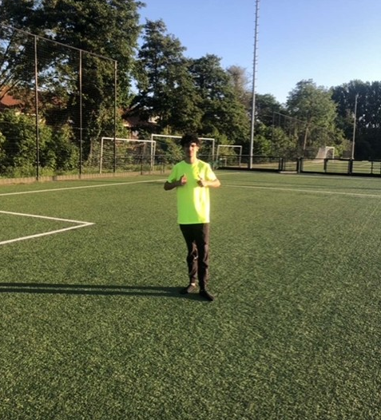

Vaardigheden
- HTML
- CSS
- JavaScript
- PHP
Eerste jaar student in software developer

Hallo mijn naam is Ziad Toumi ik ben 17 jaar oud en ik ben geboren op 25 oktober 2006 in het Erasmus Ziekenhuis.
Ik vind het erg leuk om te gaan voetballen met vrienden buiten en ook te gamen. Ook zit ik op het Techniek College Rotterdam.
Ik doe daar de opleiding Software Developer. Later wil ik een goede baan te kunnen krijgen die goed betaalt krijgt.
Ik was een bezorger bij De Beren die maaltijden ging bezorgen aan mensen,
en ik werkte om 17:00 tot 20:00
Ik was een bezorger bij Thuisbezorgd die maaltijden ging bezorgen aan mensen,
en ik werkte om 16:00 tot 19:00
Ik was een vakkenvuller bij Dirk ik ging om 16:45 tot 19:00 spiegelen.
Ookal vond ik dat super erg vervelend om dat te doen.
Ik zit in mijn eerste jaar op de TCR en ik doe de opleiding software developer niveau 4.
Ik heb op dit moment een paar programmeertalen geleerd, zoals HTML CSS JS en PHP.
Ik deed 2 jaar lang de vooropleiding D&P
en ik leerde daar hoe ik games moet maken via een app en hoe ik concerten kon organiseren.
En ik had toen in mei 2023 mijn diploma gehaald.
.png)